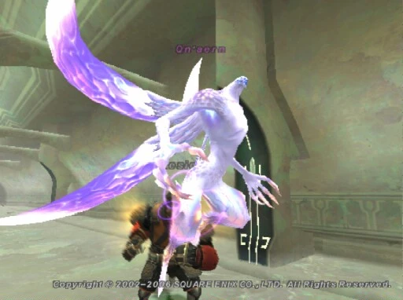

Level 75 reference · Zenith rules
|
Job: White Mage, Red Mage, or Ranger Notorious Monster |
 Image source |


| Zone | Level | Drops | Steal | Spawns | Notes |
|---|---|---|---|---|---|
|
77 |
2 |
Assists: Ix'aern (Monk) | |||
|
2 |
Assists: Ix'aern (Dark Knight) | ||||
|
HP = Detects Low HP; M = Detects Magic; Sc = Follows by Scent; T(S) = True-sight; T(H) = True-hearing JA = Detects job abilities; WS = Detects weaponskills; Z(D) = Asleep in Daytime; Z(N) = Asleep at Nighttime | |||||
Notes:
Qn'aerns accompanying Ix'aern (Monk)
- If 1 High-Quality Aern Organ is traded to the "???" (G-7 or I-7, Basement), only the Ix'aern (Monk) spawns.
- If 2 High-Quality Aern Organs are traded to the "???", the Ix'aern and 1 Qn'aern will spawn (either an RDM or WHM)
- If 3 High-Quality Aern Organs are traded to the "???", the Ix'aern and 2 Qn'aerns will spawn (one RDM, one WHM)
Qn'aerns accompanying Ix'aern (Dark Knight)
- 2 Qn'aerns (both RNGs) appear to assist the Ix'aern.
- All Qn'aerns perform their respective 2-Hours multiple times.
- All Qn'aerns die whenever the Ix'aern they are associated with dies.
Adapted from Eden Wiki: Qn'aern · Contributors and history · CC BY-SA 4.0. Revision 5306. Layout, links and optional background text adapted for Zenith.